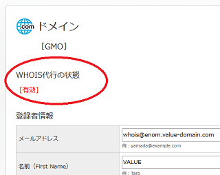
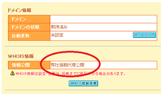
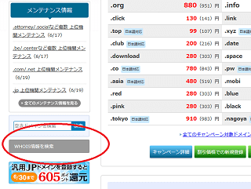
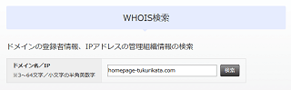
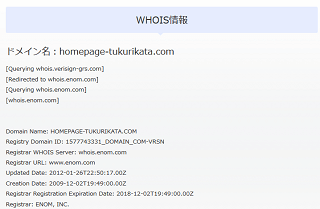
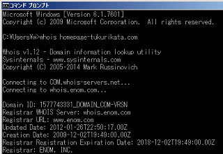
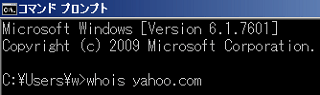

Whois代理公開で個人情報を保護
ドメインを取得した際、Whoisで登録者に関する情報がネット上で公開されることになります。そのドメイン名を誰が所有しているかについて、登録者の氏名や住所、メールアドレス、電話番号などの個人情報がWhoisで検索すれば表示されるようになります。
けれども、このWhois情報はプライバシーの面でネット上に個人情報を公開したくない人には望ましくありません。迷惑メールも多くなりますし、万一、サイト訪問者との間でトラブルになった場合、誹謗・中傷などに発展してしまう可能性もあります。
そのため、Whois情報についてはドメイン会社の名義で代理公開してもらうことをおすすめします。Whois情報を非公開にすることはできませんが、代行してもらうことにより、自分の個人情報がネット上で公開されなくなります。
また、単に代行してもらうだけなので、ドメインの所有権については変更ありません。
Whois代理公開を無料で設定できるドメイン会社
このWhois代理公開の設定は有料となっている会社も多いですが、当サイトでご紹介しているドメイン取得事業者を利用すれば、ほぼ無料で対応してもらえます。
■バリュードメインの例

■ムームードメインの例

さくらインターネットで取得した場合でも、登録者名をサイト名にするなどして個人情報を伏せることができます。
また、お名前ドットコムの代理公開については有料オプションにはなっているものの、実際には無料キャンペーン中のケースが多く、当サイト運営者の場合は過去に一度だけ払ったことがあるぐらいです。
■海外のドメイン会社の場合
一方、日本ではなく、Godaddyなどの海外のドメイン事業者の場合、このWhois代理公開は有料のケースがほとんどですが、2018年5月25日から新たにGDPR法（一般データ保護規則）が施行されており、EU域内の個人データが保護されるようになりました。
→ GDPRによるWhois代理公開への影響
Whois情報についても例外ではなく、個人情報が公開されることは法律で規制されるようになったため、海外のドメイン会社の場合は設定しなくても表示されないケースが多くなってきています。
ただし、EUの法律のため、日本には当てはまりませんが、海外のドメイン会社を利用する場合は確認しておくことをおすすめします。
Whois検索でドメインの登録者情報を確認する方法
Whois情報の代理公開の設定をしたのち、実際に自分のドメイン名で検索して公開されている情報を確認しておきましょう。
■ネット上でwhois検索する方法
このWhoisの検索方法にもいろいろありますが、バリュードメインでは以下の箇所から検索することができます。

検索する際は「www」を付けず、ドメイン名のみで入力します。

すると検索結果で登録者の情報が表示されます。

ドメインを取得した会社の情報が表示されていれば、Whois代理公開が有効になっていることになります。もし、自分の名前や住所などが表示されていたら、再度、ヘルプなどを確認して設定し直しましょう。
このWhoisには、ほかにもドメインの有効期限やネームサーバーの情報などが表示されます。
■パソコンでWhois検索する方法
当サイト運営者の場合、Windowsのコマンドブロンプトから直接検索しています。サイトをどこのレンタルサーバーに設置したのか分からなくなることが多く、主にドメイン名からネームサーバーの情報を調べるために利用しています。

ネームサーバーが分かれば、どこのレンタルサーバーに設置したのかがすぐわかります。
この方法についてですが、Whois - Windows Sysinternals | Microsoft Docsからプログラムをダウンロードし、ユーザー名のフォルダなどに「whois.exe」を置きます。あとはコマンドブロンプトから「whois.exe ドメイン名」で検索すれば登録者情報などが表示されます。

「.exe」について省略できるため、画像では「whois ドメイン名」となっています。
この場合、「Cドライブ」の「ユーザー」である「w」のフォルダに「whois.exe」のプログラムを置いていますが、コマンドブロンプトを開いたときにデフォルトで表示される場所に置いておくとよいでしょう。